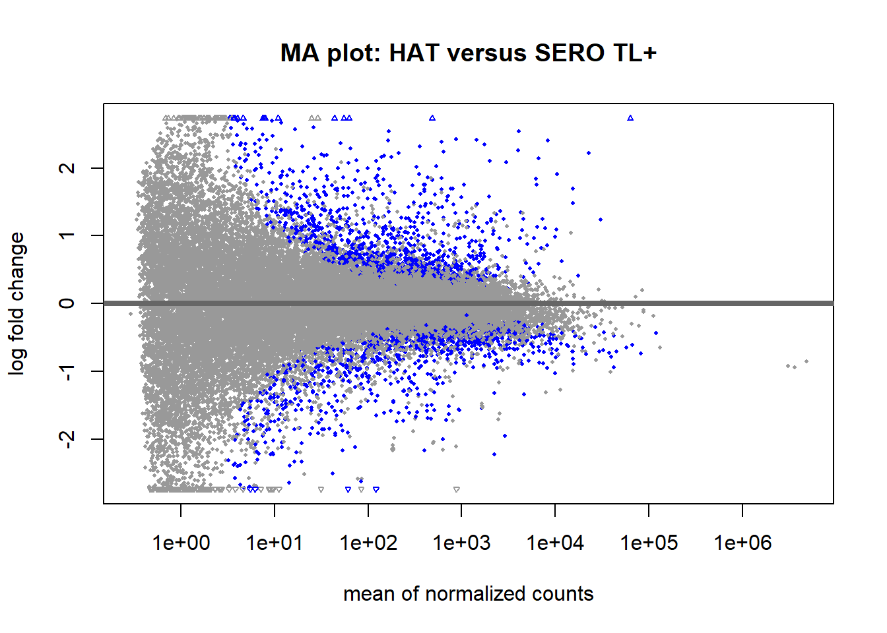
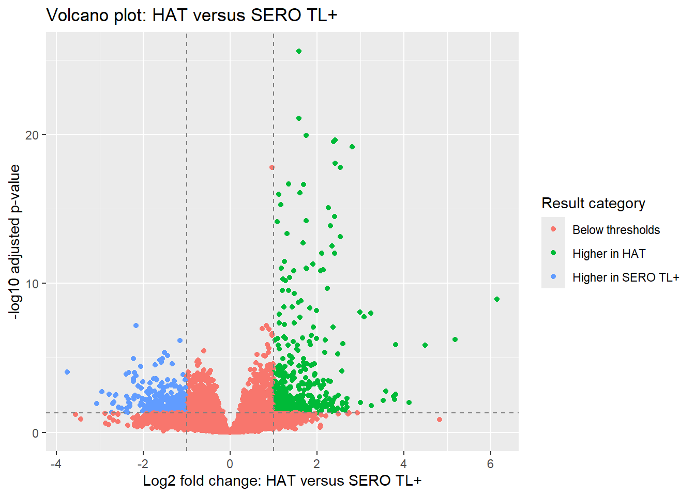

In Chapter 6, you fitted the DESeq2 model and extracted a HAT-versus-SERO TL+ contrast. We will reload the fitted model and recreate the results table before exploring the gene-level evidence with plots and annotations.
The results still use Ensembl identifiers and inspecting the table alone makes it difficult to see the overall pattern of differential expression. In this session, you’ll explore the HAT-versus-SERO TL+ results in more detail. You’ll use an MA plot to examine how estimated expression differences vary with gene abundance, create a volcano plot that combines effect size with statistical evidence, compare what the two plots show, add gene symbols and investigate IRF8 to develop a cautious biological interpretation.
NoteLearning outcomes
By the end of this session, you should be able to:
explain what baseMean, log2FoldChange and padj mean in a DESeq2 results table
interpret and compare MA and volcano plots
identify matching keys in a results table and an annotation table
use a guided lookup to add aligned gene symbols
distinguish statistical evidence, effect size and biological relevance
make a biological claim that includes evidence, uncertainty and a suitable next step
ISCB alignment: A3 (interpret candidate genes in their molecular and immunological context), C3 (combine statistical, visual and biological evidence to generate cautious hypotheses), D3 (construct and compare MA and volcano plots and apply explicit prioritisation thresholds), E3 (retain stable identifiers and add traceable gene annotations), F3 (use appropriate plotting and annotation resources), H3 (create derived variables, layered plots and guided identifier matches in R), K3 (communicate effect size, statistical evidence and biological relevance separately).
TipTry it yourself: Discuss the data
Discuss these questions with a partner before running any code to refresh what you did in the last session:
What did each row of the count matrix represent?
What did each column represent?
What did the design ~ status tell DESeq2?
In the contrast HAT versus SERO TL+, what does a positive log2FoldChange mean?
Why is padj more useful than an unadjusted p-value when thousands of genes are tested?
Does a statistically significant result necessarily represent a large or biologically important difference?
TipSolution
Each row represented one gene. The values across each row were the read counts assigned to that specific gene in each sample.
Each column represented one biological sample. The column contained the read counts for all genes measured in that sample.
The design ~ status told DESeq2 to model gene expression using the status variable. In this analysis, status distinguishes samples classified as HAT from those classified as SERO TL+.
A positive log2FoldChange means that the gene had higher estimated expression in HAT versus SERO TL+. A negative value means higher estimated expression in SERO TL+.
padj is a p-value adjusted to account for multiple testing. When thousands of genes are tested, some small unadjusted p-values will occur by chance. Using adjusted p-values reduces the risk of drawing false-positive conclusions.
No, statistical significance does not necessarily mean that a difference is large or biologically important. A gene can have a small fold change but strong statistical evidence, particularly when the measurements are consistent. Biological importance must be evaluated using the effect size, expression abundance, biological context, study design and any other supporting evidence.
7.2 Continue from Chapter 6
This session reloads dds_fitted and recreates the HAT-versus-SERO TL+ contrast from Chapter 6. We use the same contrast direction and alpha = 0.05, ensuring that the results are consistent with the table exported previously.
7.3 Examine how expression differences vary with gene abundance
First, we want to examine how the estimated expression differences between HAT and SERO TL+ vary with gene abundance. This is important because a large fold change is not equally convincing at every level of abundance. When a gene has very few counts, small differences in the observed counts can produce a large estimated fold change and that estimate may be relatively uncertain. Genes with higher counts usually provide more information, allowing their fold changes to be estimated more precisely.
An MA plot allows us to examine gene abundance and estimated expression differences together. It provides an overview of the differential expression result for all tested genes, with each point representing one gene.
The term MA plot refers to the two quantities traditionally shown:
M represents the log ratio between two measurements. Here, it will be the estimated log2FoldChange for HAT compared with SERO TL+.
A represents average abundance. Here, it is represented by the mean normalised count, or baseMean.
The plot shows:
Horizontal position: the mean normalised expression of the gene across all samples, displayed on a logarithmic scale.
Vertical position: the estimated log2 fold change for HAT compared with SERO TL+.
Colour: whether the adjusted p-value is below the value supplied to alpha.
Genes with low mean counts appear on the left, while genes with high mean counts appear on the right. Genes above zero have higher estimated expression in HAT, while genes below zero have higher estimated expression in SERO TL+.
If most genes do not differ strongly between the groups, the main cloud of points should be centred approximately around a log2 fold change of zero. The vertical spread is often wider on the left because fold changes are less precisely estimated for genes with low counts. Toward the right, the greater amount of count information usually produces more stable estimates, so the points often form a narrower band around zero.
The MA plot therefore helps us ask whether large estimated differences occur mainly among low-abundance genes, whether changes occur in both directions, and whether there are broader patterns across the range of gene abundances. A large fold change may be interesting but it should be considered alongside abundance, uncertainty and statistical evidence.
We can create an MA plot from the DESeq2 result using the plotMA() function. The function uses an adjusted p-value threshold of 0.1 by default. We will explicitly use alpha = 0.05 so that the threshold is consistent with the other analyses we will do that use a p-value threshold of 0.05.
plotMA( res_hat_vs_sero,alpha =0.05,main ="MA plot: HAT versus SERO TL+")

7.3.1 What does the MA plot tell us?
We use the MA plot to check whether the estimated fold changes appear reasonable across the range of gene abundances. In particular, we want to know whether large fold changes occur mainly among low-count genes, where the estimates are generally less precise.
Examine the plot and discuss the following questions with a partner before revealing the solution:
Is the main cloud of genes centred approximately around a log2FoldChange of zero?
Is the spread of fold changes wider among genes with low or high mean counts?
Are genes with padj < 0.05 found above and below zero?
Based on the plot, which fold changes should be interpreted most cautiously and why?
TipSolution
Yes. The main cloud is centred approximately around zero, indicating that many genes have relatively small estimated expression differences between HAT and SERO TL+.
The spread is widest among genes with low mean counts and generally becomes narrower as abundance increases. This is because low-count genes provide less information for estimating fold changes.
Yes. Blue points occur above and below zero. The result therefore includes genes with adjusted p-values below 0.05 that have higher estimated expression in HAT and genes that have higher estimated expression in SERO TL+.
Large fold changes among genes with low mean counts should be interpreted most cautiously. Small differences in low counts can produce large fold-change estimates, and these estimates are generally less precise. Fold-change size should therefore be considered alongside abundance and statistical evidence.
Overall, the plot suggests that many genes have relatively small estimated differences, while subsets of genes differ in both directions. Many of the most extreme fold changes occur among low-abundance genes, so a large fold change alone is not sufficient evidence that a gene is biologically important.
WarningWhat if the MA plot looks unusual?
An MA plot does not need to form a perfect funnel or be exactly symmetrical. Real biological differences may produce more changes in one direction than the other.
However, some patterns should prompt further investigation:
Most points are shifted above or below zero: there may be a widespread biological difference, a change in cell composition or a problem with normalisation, sample labels or the model design.
There is a curve or trend across the abundance range: the estimated fold changes may depend systematically on gene abundance.
The spread remains very wide among high-abundance genes: some samples may be unusually variable or influential.
Almost all large fold changes occur among very low-abundance genes: the apparent differences may be driven mainly by uncertain estimates based on small counts.
An unusual MA plot does not identify the cause or automatically mean that the analysis has failed. It tells us we need to examine the sample metadata, count distributions, model design and sample-level plots before drawing biological conclusions.
7.3.2 Saving the MA plot
When we used ggplot2 previously, we could store a plot in an R object and save that object using ggsave(). The plotMA() function works differently. It draws the plot directly rather than returning a ggplot2 object so we will have to save it using the base R graphics system.
Saving a base R plot involves three steps:
Use png() to open a PNG graphics device and specify the output filename.
Run the plotting code. While the graphics device is open, the plot is sent to the PNG file instead of being displayed in the Plots pane.
Use dev.off() to close the graphics device and finish writing the image file.
png(filename ="figures/MA_hat_vs_sero.png")plotMA( res_hat_vs_sero,alpha =0.05,main ="MA plot: HAT versus SERO TL+")dev.off()
png
2
WarningRemember to close the graphics device
If dev.off() is not run, R may not finish writing the image correctly. Later plots may also continue to be sent to the PNG file instead of appearing in the Plots pane.
If this happens, run:
dev.off()
null device
1
Then create the plot again.
7.4 Examine effect size and statistical evidence together
The MA plot helped us examine whether estimated fold changes varied with gene abundance. We will now consider a different question: which genes combine a relatively large estimated expression difference with strong statistical evidence?
These genes may be useful candidates for further biological investigation. However, a large, statistically supported difference does not automatically make a gene biologically important.
A volcano plot shows:
Horizontal position: the estimated log2FoldChange for HAT compared with SERO TL+.
Vertical position: the adjusted p-value after a -log10 transformation.
Colour: whether a gene passes the selected fold-change and adjusted p-value thresholds.
Genes with negative fold changes appear on the left and have higher estimated expression in SERO TL+. Genes with positive fold changes appear on the right and have higher estimated expression in HAT.
Genes with smaller adjusted p-values appear higher on the plot. Therefore, genes that combine larger fold changes with stronger statistical evidence appear toward the upper-left or upper-right.
Unlike the MA plot, a volcano plot does not show gene abundance. The two plots answer different questions and should be interpreted together.
7.4.1 Prepare the data
The vertical axis of a volcano plot typically uses -log10(padj). This transformation makes small adjusted p-values easier to see because smaller values appear higher on the plot. Look back at Chapter 4 for a reminder about logarithmic transformations.
Before applying the transformation, we need to deal with a specific issue. If DESeq2 cannot provide an adjusted p-value for a gene, it records padj = NA. This represents missing information rather than a numerical value, so it cannot be transformed or plotted on an axis. This represents missing information rather than a numerical value and it cannot be transformed or plotted on an axis. We can filter these from the results data frame using the is.na() function using logical row selection, just as we did during low-count filtering in Chapter 5. This function returns TRUE when the value is missing and FALSE when it is present. The symbol ! means not. It reverses the logical values:
!TRUE becomes FALSE
!FALSE becomes TRUE
Therefore, !is.na(result_data$padj) identifies rows where padj is not missing. We can use this statement to remove rows from the result_data data frame with no padj value and create a new data frame called plot_de.
plot_de <- result_data[!is.na(result_data$padj),]
We can now calculate -log10(padj). The negative sign ensures that smaller adjusted p-values produce larger positive values, so genes with stronger statistical evidence appear higher on the plot:
plot_de$minus_log10_padj <--log10(plot_de$padj)
7.4.2 Highlight genes that pass both thresholds
For this plot, we will highlight genes that have:
an adjusted p-value below 0.05
an absolute log2FoldChange greater than 1. Values greater than 1 indicate more than twofold higher estimated expression in HAT, while values below -1 indicate more than twofold higher estimated expressio in SERO TL+.
In earlier chapters, you created groups by splitting a table into separate parts and then combining those parts again. Here, we will use a shorter approach.
NoteYou do not need to memorise this code
For now, focus on what the code does.
We will create one new column called direction. Every gene will start in the "Below thresholds" category. We will then replace that value for genes that meet both the adjusted p-value and fold-change conditions.
This keeps all genes in one data frame and gives ggplot2 a single column that it can use to assign colours.
# Start with all genes below the combined thresholdsplot_de$direction <-"Below thresholds"# Genes higher in HATplot_de$direction[ plot_de$padj <0.05& plot_de$log2FoldChange >1] <-"Higher in HAT"# Genes higher in SERO TL+plot_de$direction[ plot_de$padj <0.05& plot_de$log2FoldChange <-1] <-"Higher in SERO TL+"table(plot_de$direction)
Below thresholds Higher in HAT Higher in SERO TL+
21772 395 258
Genes classified as "Below thresholds" may still have a small adjusted p-value or a large fold change but they do not meet both conditions.
These thresholds help us select genes for further investigation. They do not determine whether a gene is biologically important.
7.4.3 Build the volcano plot using ggplot2
This is the most detailed ggplot2 figure we have created so far. You do not need to memorise all of the code and we will explore ggplot2 and plot customisation in more detail in a later tutorial.
For now, focus on how the plot is built by adding layers. Each layer adds a new feature, such as the points, threshold lines or labels. Hopefully, this example will demonstrate the power of the ggplot2 approach and how a complicated figure can be constructed gradually from a series of simpler components.
Layer 1: Map the data and draw the points
We first specify the data and map three variables to visual features, drawing the genes as points with geom_point:
log2FoldChange will be shown on the x-axis
minus_log10_padj will be shown on the y-axis
direction controls point colour (remember, it will either be Higher in HAT, Higher in SERO TL+ or Below thresholds)
the point colours correspond to the categories in direction
Layer 2: Add the threshold lines
We can continue adding layers to the volcano_plot object we have created to build it up. For example, we can add vertical lines for the fold-change thresholds at -1 and 1 using geom_vline(). We also add a horizontal line for the adjusted p-value threshold using geom_hline(). Remember: the value 0.05 must first be transformed because the vertical axis also uses -log10().
Finally, we add a title, axis labels and a label for the colour legend.
volcano_plot <- volcano_plot +labs(title ="Volcano plot: HAT versus SERO TL+",x ="Log2 fold change: HAT versus SERO TL+",y ="-log10 adjusted p-value",colour ="Result category" )volcano_plot

7.4.4 What does the volcano plot tell us?
We use the volcano plot to find genes that combine a relatively large estimated expression difference with strong statistical evidence.
Examine the plot and discuss these questions with a partner before revealing the solution:
Is the main cloud of genes centred approximately around a log2FoldChange of zero?
Are genes that pass both thresholds present on the left and right sides of the plot?
What do points in the upper-left and upper-right regions represent?
Which genes might you prioritise for further investigation, and what additional information would you need before judging their biological importance?
TipSolution
The densest part of the main cloud is centred approximately around a log2FoldChange of zero. However, the distribution is not perfectly symmetrical. More genes extend into the positive side of the plot, indicating more substantial expression differences in the HAT direction.
Genes that pass both thresholds are present on both sides of the plot, but they are not equally distributed. There are more green points on the right than blue points on the left. This suggests that more genes pass the selected thresholds with higher estimated expression in HAT than in SERO TL+.
Points in the upper-right have positive fold changes and very small adjusted p-values. These genes have higher estimated expression in HAT and strong statistical evidence for a difference. Points in the upper-left have negative fold changes and small adjusted p-values. These genes have higher estimated expression in SERO TL+ and strong statistical evidence for a difference.
Genes toward the upper-left and upper-right may be useful candidates for further investigation because they combine relatively large fold changes with strong statistical evidence. In this plot, several of the strongest candidates are in the upper-right region. Before judging their biological importance, we would also need to examine their expression abundance, fold-change uncertainty, gene identity, biological function and relevance to HAT.
Overall, the volcano plot shows statistically supported expression differences in both directions, but the result is weighted toward genes with higher estimated expression in HAT. The plot helps us identify candidate genes for further investigation, but it does not show gene abundance or establish biological importance. We therefore need to consider the volcano plot alongside the MA plot and add gene annotations before interpreting particular genes.
The volcano plot highlights candidate genes, but they still need to be identified and interpreted in their biological context.
Does the overall pattern in the volcano plot support a broader biological interpretation, or do we need more information before making one?
7.4.5 Saving the volcano plot
The volcano plot currently only exists as an object in the R Environment. To use the plot outside R, we can save it as an image using the ggsave() function. Try to recall the code from Chapter 3 and Chapter 4 to save the volcano_plot as volcano_hat_vs_sero.png into the figures output directory.
A volcano plot does not show gene abundance. A gene with a large fold change may have very low counts and a relatively uncertain effect-size estimate.
The upper-left and upper-right points may be useful candidates, but their positions do not prove biological importance. Interpretation also requires the MA plot, the results table, gene annotations and biological context.
7.5 Compare the MA and volcano plots
Work with a partner to discuss these questions before revealing the solution:
What does one point represent in both plots?
What information does the MA plot show that the volcano plot does not?
What information does the volcano plot make easier to assess?
Why should the two plots be interpreted together?
TipSolution
Each point represents one gene.
The MA plot shows gene abundance, allowing us to see whether large estimated fold changes occur mainly among genes with low counts.
The volcano plot makes it easier to identify genes that combine a larger estimated fold change with stronger statistical evidence.
A volcano plot does not show abundance, while an MA plot does not display statistical evidence as a continuous axis. Together, the plots provide a more complete view of the differential expression result.
7.6 Identify the genes
The MA and volcano plots show where potentially interesting genes occur but the genes are still identified using Ensembl IDs. Ensembl IDs are useful for analysis because they provide a consistent identifier but gene symbols are easier for us to recognise and connect to biological knowledge. To explore our data, we will therefore add gene symbols to the results data frame while keeping the original Ensembl IDs.
7.6.1 Import the annotation table
First, import the prepared CSV annotation table that maps Ensembl identifiers to gene symbols. Download the file from Moodle and place it in your project folder. An optional activity later explains how the table was prepared.
The match() function tells us where values from one vector occur in another vector and can be used to look up values. This works even when the two vectors are not in the same order.
NoteHow match() works: a toy example
This can be difficult to follow at first, so let’s practise with two short example vectors: result_ids and annotation_ids. You do not need to enter or run this code. You do not need to enter or run these statements.
The two vectors contain the following values:
result_ids
Position
Identifier
1
ENSG_A
2
ENSG_B
3
ENSG_X
annotation_ids
Position
Identifier
1
ENSG_B
2
ENSG_C
3
ENSG_A
If we use match() to ask where each item in result_ids occurs in annotation_ids we get this result.
match(result_ids, annotation_ids)[1] 31NA
This means:
"ENSG_A" is in position 3 of annotation_ids
"ENSG_B" is in position 1
"ENSG_X" was not found, so match() returns NA
match() returns positions rather than symbols. We can use those positions to retrieve the corresponding values from another column, effectively using the annotation data frame as a lookup table.
7.6.3 Match the real gene identifiers
Let’s try it on the Ensembl IDs in the gene_id column of result_data to find which row in annotation_data matches in the ENSEMBL column. We’ll store the vector in a new object called matched_rows.
Each value in matched_rows gives the position of that gene in annotation_data. The order of matched_rows follows the order of the genes in result_data.
We can use those row positions to retrieve the equivalent gene symbols in the SYMBOL column of annotation_data and store them as a new column called symbol in result_data:
The Ensembl IDs and symbols now appear together. The original gene_id column has been retained so that each result can still be traced back to the identifier used in the analysis.
NoteWhy are some identifiers not matched?
We can count how many Ensembl IDs were not found in the annotation table:
sum(is.na(matched_rows))
[1] 709
An NA means that an Ensembl ID in result_data was not found in this annotation table. It does not mean that the gene was absent from the RNA-seq data or that its DESeq2 result is invalid. A match may be missing because:
the gene does not currently have an approved gene symbol
the count data and annotation table use different annotation releases
the Ensembl identifier has been updated, replaced or retired
the identifier refers to a transcript or genomic feature that is not represented in this gene annotation table
7.7 Investigate IRF8
In an earlier tutorial, you found that an immune-related gene had higher expression in HAT. You also know that individuals in the HAT group have overt symptoms, while individuals classified as SERO TL+ do not.
Does the overall pattern in the volcano plot support a broader biological interpretation, or do we need more information before making one?
TipTry it yourself: Investigate a differentially expressed gene
Use the annotated results table to find the row containing the following Ensembl gene identifier:
ENSG00000140968
Use the information in the results table and an appropriate gene database to answer the following questions:
What is the gene symbol associated with this Ensembl identifier?
What is the main biological function of this gene?
What is its log2FoldChange?
Is its estimated expression higher in HAT or SERO TL+?
Convert the log2 fold change into an ordinary fold change using: 2^VALUE
What does the adjusted p-value indicate about the statistical evidence for a difference between the groups?
Based on the function of this gene, suggest why its expression might differ between HAT and SERO TL+ samples.
What additional information or evidence would you need before making a strong biological conclusion?
Write a two- or three-sentence interpretation of the result (you could add it as a comment in your script to remind yourself).
TipPossible Answer
The Ensembl identifier ENSG00000140968 corresponds to Interferon regulatory factor 8 (IRF8), also known as interferon consensus sequence-binding protein.
IRF8 is a transcription factor involved in immune-cell development, particularly in myeloid and lymphoid lineages, and in regulating immune responses to infection.
IRF8 has a log2FoldChange of approximately 1.58.
Because this value is positive for the HAT versus SERO TL+ comparison, its estimated expression is higher in HAT.
Converting the log2 fold change into an ordinary fold change gives:
2^1.58
[1] 2.989698
Estimated IRF8 expression is therefore approximately three times as high in HAT as in SERO TL+.
The adjusted p-value is approximately (2.578 ^{-26}). This provides very strong statistical evidence that IRF8 expression differs between the groups.
IRF8 is a transcription factor involved in immune-cell development and responses to infection. Its higher expression in the HAT samples could therefore be associated with differences in immune activity between the groups.
The result is an association and does not show what caused the difference. It could reflect a change in gene expression within particular cells, differences in the proportions of immune-cell types or other biological or technical differences between the groups.
7.8 Bring the results together
So far, we have examined the same differential expression result in three different ways:
the MA plot showed how estimated fold changes varied with gene abundance
the volcano plot showed which genes combined larger estimated differences with stronger statistical evidence
the annotation table allowed us to connect Ensembl identifiers to recognisable gene symbols
Together, these approaches help us move from a large statistical results table toward a possible biological interpretation.
TipTry it yourself: Interpret the data so far
With a partner, select a few annotated genes that you find interesting and discuss:
What overall biological interpretation, if any, is supported by the MA plot, volcano plot and selected genes? What can these results not yet tell us?
You do not need to reach a definitive conclusion. Be prepared to explain which evidence supports your interpretation and what remains uncertain.
TipPossible solution
A reasonable discussion might identify that:
many genes have relatively small estimated differences between HAT and SERO TL+
subsets of genes show larger, statistically supported differences in both directions
more genes pass the selected thresholds with higher estimated expression in HAT than in SERO TL+
some annotated genes may suggest related biological functions, but this depends on which genes are selected
large fold changes among low-abundance genes should be treated cautiously
passing the selected thresholds does not automatically make a gene biologically important
The results support an association between expression and sample status in this dataset. They do not establish that the expression differences caused the symptoms, identify the cell types responsible, or show whether every sample follows the same overall pattern.
It is also reasonable to conclude that more information is needed before proposing a clear biological interpretation.
In the next chapter, the unit of analysis changes. In this session, each plotted point represented a gene. Next time, each plotted point will represent a sample, allowing us to ask whether the overall expression profiles of HAT and SERO TL+ samples show a corresponding global pattern.
7.9 Summary
In this chapter, you:
reloaded the fitted model and recreated the HAT-versus-SERO TL+ result
interpreted complementary MA and volcano plots
used explicit thresholds to prioritise genes for further investigation
added gene symbols while retaining the original Ensembl identifiers
investigated IRF8 using statistical and biological evidence
developed a cautious interpretation and identified questions requiring sample-level analysis
7.10 Optional extra activities
You have now completed the required activities for this session. The remaining section is an optional, but valuable challenge for further practice. You can attempt it now or return to it later.
TipOptional Activity 1: Choose your own thresholds
The thresholds used in the volcano plot are analytical choices rather than universal rules. Different thresholds may be appropriate depending on the purpose of the analysis.
Independently choose:
an adjusted p-value threshold
a positive and negative log2FoldChange threshold
Modify the classification and plotting code so that the point colours and dashed lines represent your chosen values.
Then answer the following questions:
Why did you choose these thresholds?
How many genes are placed in each category?
How does your plot differ from the original plot?
Did any points move, or did only their categories and colours change?
What are the advantages and disadvantages of your threshold choices?
Which genes might your thresholds exclude from further investigation?
Would you use the same thresholds for every biological question?
Compare your plot and reasoning with a neighbour. If you selected different thresholds, discuss which choice would be most appropriate for selecting a manageable set of genes for further investigation.
TipPossible solution
There is no single correct pair of thresholds. A good response should explain how the chosen thresholds balance effect size, statistical evidence and the purpose of the analysis.
A lower adjusted p-value threshold, such as 0.01, requires stronger statistical evidence. This will usually highlight fewer genes and may produce a more manageable candidate list. However, potentially relevant genes with adjusted p-values between 0.01 and 0.05 will be excluded.
A larger absolute fold-change threshold, such as 1.5, focuses attention on genes with larger estimated differences. However, genes with smaller effects may still be biologically relevant, especially if several genes from the same biological process change together.
A less stringent fold-change threshold, such as 0.5, will include genes with moderate estimated differences. This may help identify coordinated biological patterns, but it may also produce a long candidate list that is difficult to investigate.
The positions of the points should not change because the coordinates are determined by the original log2FoldChange and padj values.
Changing the thresholds should alter the dashed lines and the categories assigned to some genes.
The thresholds should be chosen with reference to the biological question and the planned next step. For example, stricter thresholds might be useful when selecting a small number of genes for experimental validation. Less stringent thresholds might be appropriate when looking for coordinated patterns across pathways or groups of genes.
A strong answer should also recognise that threshold-based selection creates a sharp boundary. Two genes on opposite sides of a threshold may have very similar results. Thresholds are therefore useful for organising and prioritising results, but they should not be treated as a definitive boundary between biologically important and unimportant genes.